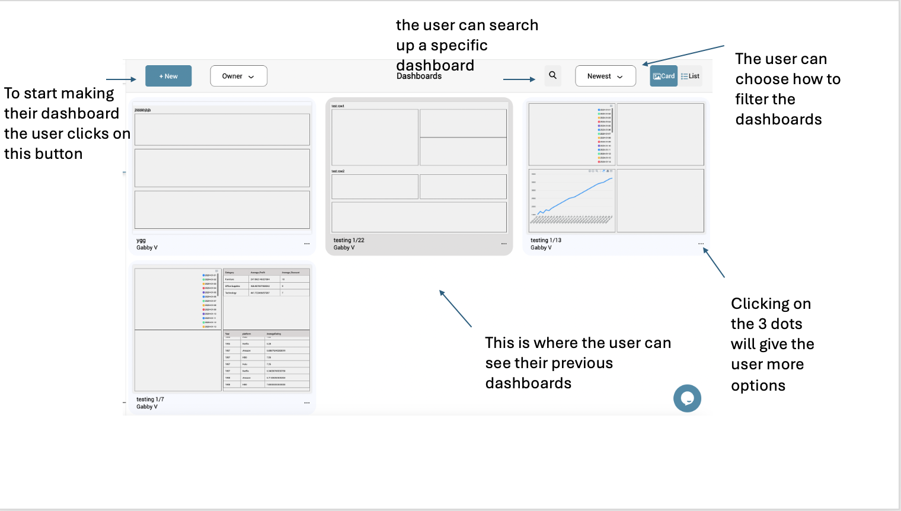
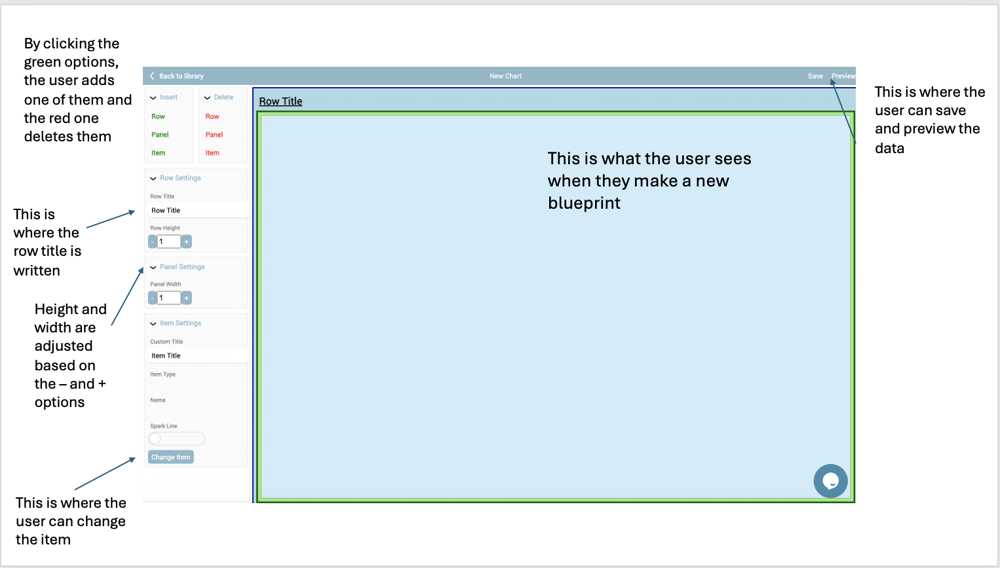
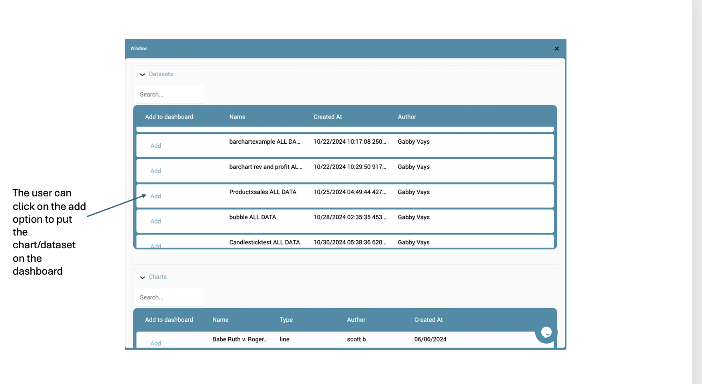
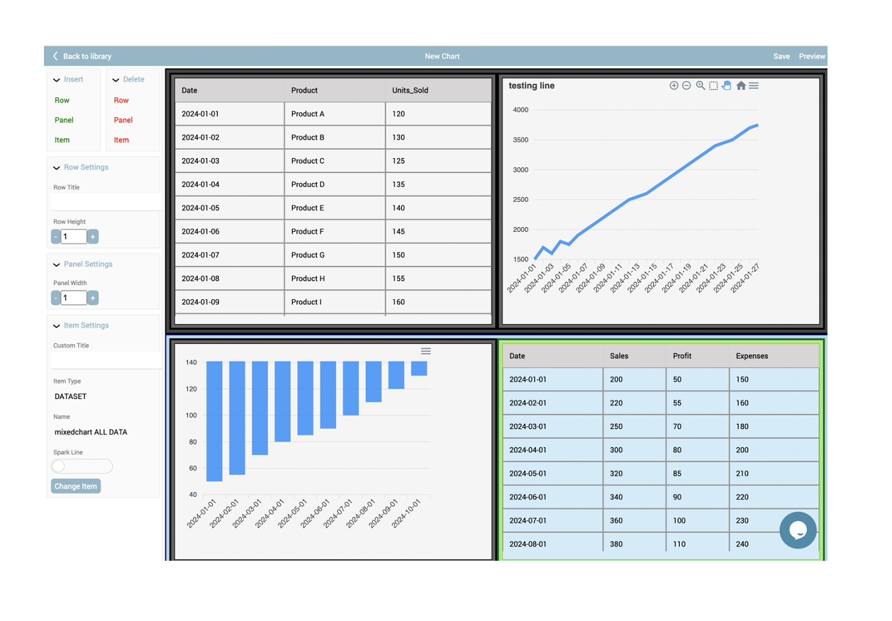
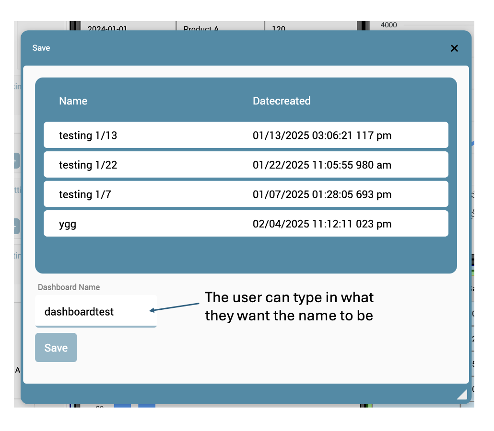

Dashboards Overview
Dashboards allow users to visualize datasets through charts and tables. Users can create new dashboards, customize layouts, and filter data.
Step 1: Creating a Dashboard
To create a new dashboard, users can click on the + New button. This initializes a blank dashboard where components can be added.
Step 2: Configuring Panels
Users can adjust row titles, panel sizes, and layout configurations using the left-side settings. This allows for a flexible arrangement of visual elements.
Step 3: Adding Data to Dashboard
Users can select datasets and charts to be displayed on the dashboard by clicking the Add option next to each data source.
Step 4: Reviewing the Final Dashboard
After adding all desired elements, users can preview the final layout, ensuring all data visualizations are correctly placed and formatted.
Step 5: Saving and Naming the Dashboard
Once satisfied with the setup, users can save the dashboard by giving it a descriptive name. This allows for easy retrieval and future modifications.